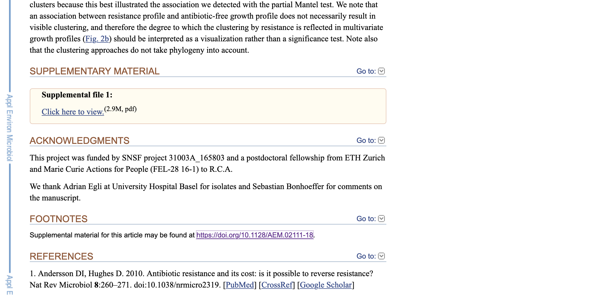
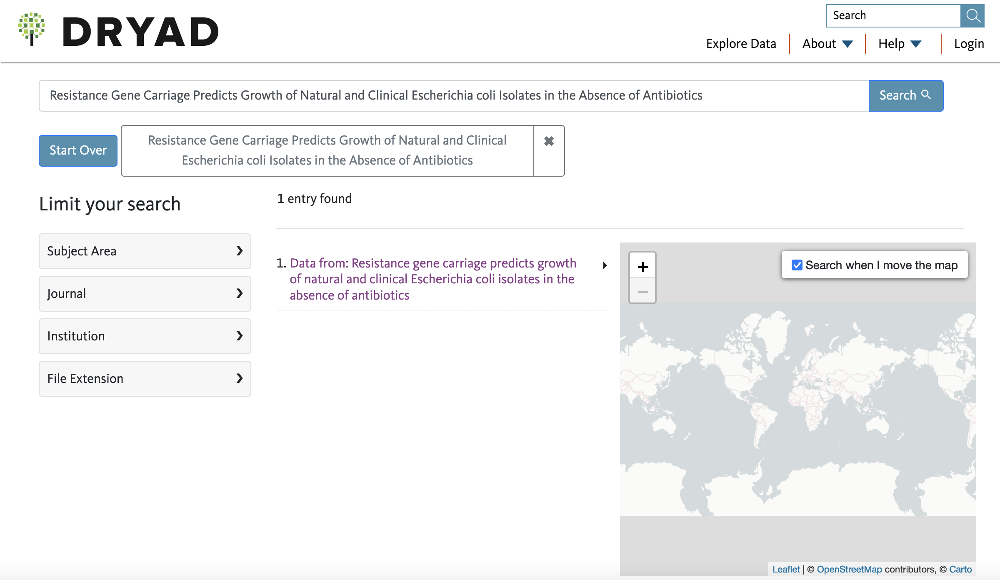
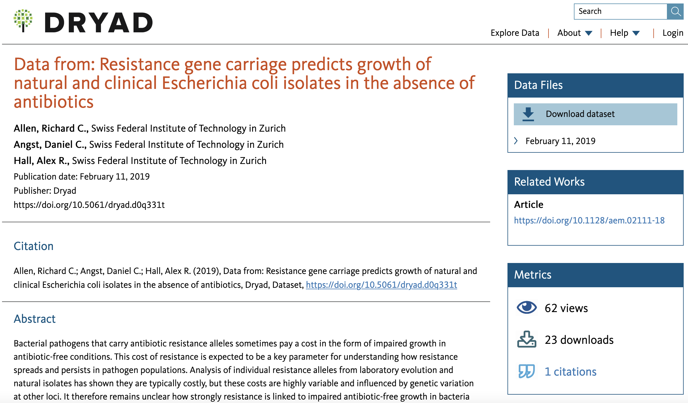
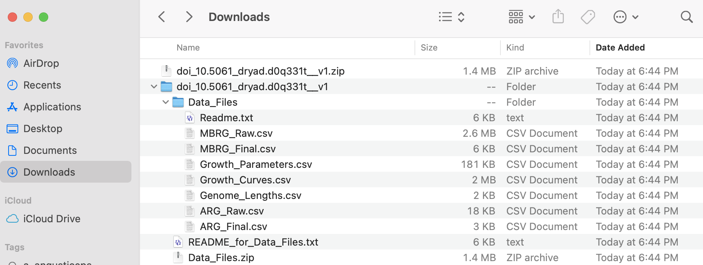

Session 29 – Bioinformatics Literature
29.1 Peer-reviewed bioinformatics journals
More than +25 journals exist that are focused on bioinformatics research and tools. Many of those report the development of new tools and software with applications in computational medicine and biology. Most articles in these journals undergo peer-review evaluation, which is when one or more researchers with similar competencies as the authors (i.e., peers) determine if the presented research or paper is valid, reproducible, and the interpretation of results are accurate and consistent with the current knowledge on the subject. This process allows to improve the quality of science published and prevents flawed or misinterpreted research to become public. Most scientists, industry, and policymakers play most attention to these articles.
Here is a list of some of the most widely cited journals in bioinformatics or with a strong emphasis on research derived from bioinformatics. All these journals publish articles after peer-reviewed evaluations:
- Bioinformatics (2019, impact factor IF: 5.610). Mostly brief notes on new software and some reviews.
- Briefings in Bioinformatics (2019, impact factor IF: 8.990). This journal publishes reviews for the users of databases and analytical tools of contemporary genetics, molecular and systems biology and is unique in providing practical help and guidance to the non-specialist in computerized methodology.
- PLOS Computational Biology (does not provide impact factor). This journal publishes articles focused on the application of computational methods from molecules to ecosystems.
- BMC Bioinformatics (2019, impact factor IF: 3.169). This is an open access journal that considers articles describing novel computational algorithms and software, models and tools, including statistical methods, machine learning and artificial intelligence, as well as systems biology.
- GigaScience (2020, impact factor IF: 6.524). This is an open access journal focusing on ‘big data’ research from the life and biomedical sciences.
- Molecular Biology and Evolution (2020, impact factor IF: 16.240). This is an open access journal focusing on patterns and processes that impact the evolution of life at molecular, it usually includes new and novel applications of bioinformatic tools.
- Genome Biology and Evolution (2020, impact factor IF: 3.416). This journal focusses on research at the interface between evolutionary biology and genomics.
- Nucleic Acids Research (2020, impact factor IF: 16.971). This journal publishes research into physical, chemical, biochemical and biological aspects of nucleic acids and proteins involved in nucleic acid metabolism and/or interactions.
- Methods in Ecology and Evolution (2020, impact factor IF: 7.780). This journal publishes articles that promote development of new methods (usually computational) in ecology & evolution.
- Nature Methods (2020, impact factor IF: 28.550). This journal publishes detailed protocols for diverse fields of the biological, chemical, and clinical sciences.
- Molecular Systems Biology (2020, impact factor IF: 11.400). This is an open access journal focusing on the fields of systems biology, synthetic biology and systems medicine.
- Genome Research (2020, impact factor IF: 9.043). This journal publishes studies on the structure, function, biology, and evolution of genomes.
- Genome Biology (2020, impact factor IF: 13.583). This journal publishes research in all areas of biology and biomedicine from a genomic and post-genomic perspective.
- Systematic Biology (2020, impact factor IF: 15.683). This journal publishes research about the theory, principles, and methods of systematics as well as phylogeny, evolution, morphology, biogeography, paleontology, genetics, and the classification of all living things.
Note: Impact factor or IF/JIF is a relative index of the overall quality of journal and it is calculated as the yearly mean number of citations of articles published in the last two years. IF is considered as a proxy for the importance and prestige of a journal within its field of study. Low IF journals (e.g., those with less than 2.0) are considered as less impactful than those with higher IF. However, this index is not without controversy, here is other source on this controversy.
29.2 Access to journals articles
Most published research is now accessible through online sources (i.e., print forms are becoming obsolete). However, to access such articles, many of the journals above require an institutional or personal subscription that can be costly. However, many of these papers are provided to readers for free through different databases that are public.
Here is a list of some of the most comprehensive collections of free papers that accessible to the public:
- PubMed. PubMed is a free search engine accessing primarily the MEDLINE database of references, abstracts and online books on life sciences and biomedical topics. Citations may include links to full text content from PubMed Central and publisher web sites.
- Zenodo. This open-access repository that allows researchers to deposit research papers, data sets, research software, reports, and any other research related digital artefacts.
- bioRxiv. This is an open access preprint repository for the biological sciences. It provides preprints and papers that are not peer-reviewed.
- ResearchGate. This is is a social networking site for scientists and researchers to share papers, ask and answer questions, and find collaborators.
- Academia. This is for-profit social networking website for academics. You might find full papers, yet it requires a bit navigating or searching through browsers.
Unfortunately, many recently published papers are not available on the sources above and you might get stuck trying to get a PDF of a paper of interest. However, most universities can provide you a PDF copy of a paper of interest through the Interlibrary Loan Service or ILS where a researcher of an institution that does not have access to article, book, or other library resource can receive a PDF or the actual document from another library that has access to it. The process requires that the user makes a request through ILS with their home library. Your institution library will act as an intermediary, identifies libraries with the desired item, places the request, receives the item, makes it available to the user, as well as arranges for its return (if necessary). For books, the lending library usually sets a due date and overdue fees of the material borrowed.
29.3 Informal access to code: Preprints and vignettes
The top bioinformatic journals (and other publications) provide a formal outlet about bioinformatics research, yet most research in biology now involves some level of development and implementation of bioinformatic tools. This trend is consequence of the rapid expansion, generation, and accessibility of big datasets that require some level of automation and complex computation analyses. In most multidisciplinary research articles, it has become customary that bioinformatics code is provided as annexes, appendices, supplementary materials, or hosted in dedicated online databases such as GitHub. Likewise, many authors prefer to publish manuals and description of their bioinformatic methods as a preprints, which are draft versions of a research article that precedes formal peer-review process and its publication in a journal. These preprints are usually hosted in specialized databases such as bioRxiv. For introductory, manuals, application examples, and guidelines on use of specific bioinformatic tools (like those written in R language), you might find vignettes associated with a specific R package in the CRAN or Bioconductor repositories.
Here is an example of how to access the DESeq2 R-package vignette, which is a package for the analysis of differential gene expression analysis.
## If you need to install this package in your computer:
if (!requireNamespace("BiocManager", quietly = TRUE))
install.packages("BiocManager")
BiocManager::install("DESeq2")
## If you already have installed the DESeq2 package, load it in R space:
library(DESeq2)
## To view documentation and vignette associated with DESeq2:
browseVignettes("DESeq2")29.4 Accessing online data (DRYAD)
You might want to access data for your own research, data comparisons with previous published studies, and/or complement your own datasets and projects. This can be done using and accessing several online databases. One of the most important is DRYAD. From their website, Dryad Digital Repository mission is to serve as an indefinity repository of curated (i.e., revised) digital resources that makes published data discoverable, freely reusable, and citable. Therefore, these data can then be re-used to create new knowledge. Dryad is an initiative >300 journals and scientific societies that adopted a joint data archiving policy (JDAP) for their publications, and their recognition that open data, easy-to-use, not-for-profit, community-governed data infrastructure is fundamental to maintain such digital resources. Dryad stores mostly biological and medical data used in peer-reviewed journals.
To access Dryad, you can first determine if the article of interest has archived data in this repository. We will use this article that you can access from PubMed:
Allen, R. C., Angst, D. C., & Hall, A. R. (2019). Resistance Gene Carriage Predicts Growth of Natural and Clinical Escherichia coli Isolates in the Absence of Antibiotics. Applied and environmental microbiology, 85(4), e02111-18. https://doi.org/10.1128/AEM.02111-18
1) For this example, we find the digital article by searching PubMed. The results show that it can be accessed by a PubMed link or by a PMC link.
2) Most times, the authors will report that they have a supplementary material in their methods or in special section at the end of the article (e.g., footnotes, supplementary material, etc). In this case, it provides only a PDF and a link to journal digital article.

3) Like in many cases, there is no mention of a Dryad submission or DOI in the text of the paper. However, you can try to determine if such digital repository exists by searching the title of the article directly in DRYAD. I suggest doing this and not use the Dryad DOI (sometimes this is a broken link). To search in the Dryad website, you will paste the title of the article on the Search tab in the top right side.
4) If associated data files exist for this paper, you will see how many entries are associated to the paper title. In this case, only one exists and you can click on such link.

5) In the webpage associated with the data, you will see a title like Data from:…, a summary/abstract of the paper, and a link to the Data Files with a tab to Download dataset. You can click on the latter to get the associated zip file.

6) The associated data is in a compressed file called doi_10.5061_dryad.d0q331t__v1.zip. After uncompressing this file, you can identify several archives and folders that include a Readme.txt with explanation of the contents of each data file with a *.csv extension.

I added these files to the LINK TO FILES of BIO/BIT 209.
7) After downloading, you can explore those files in a text editor and they can be easily imported into R or excel. For reference, we can import two of these datasets (ARG_Raw.csv and Growth_Curves.csv) as explained in section 2.6 Importing and exporting data.
We can start with ARG_Raw.csv
## We start by readinf the metadata about such file in the text of README_for_Data_Files.txt.
## We found the following:
ARG_Raw.csv
This is a data table of the output of running BLASTn with the contigs of the draft
genome assemblies of the isolates against the ResFinder database (nucleotide). The
column headings mostly correspond to standard blast outputs but are outlined below:
Strain-Which strain genome the hit was.
Contig-Most genomes are draft assemblies so there are multiple segments (here
called nodes), this shows which node the hit occurred in.
ARG- which antibiotic resistance gene in the query matched the sequence.
Per.ID- Percentage identity.
Length- Length of the matching region
MiMa- Number of mismatches
Gap- Total length of gaps
C.Start & C.End- Start and end of the matching region on the contig
A.Start & A.End- Start and end of the matching region on the query
E. value- Significance value for the hit, calculated within strain.
Bit.Score- overall score for the strength of the Hit. For overlapping
hits, only the highest bit score was retained.
## We need to find the path to the corresponding file by "drag-and-drop" in
## MACs or finding file properties in PCs.
## In my computer (MAC), they look like this:
~/Desktop/Teach_R/class_datasets/Dryad_example_for_Data_Files/ARG_Raw.csv
## Both files are *.csv (i.e., comma delimited files), so they can be easily
## imported with the read.table function.
## These files have data as comma delimited and we want to preserve headers
ARG_Raw_Allen_etal_2019_df <- read.table (file = "~/Desktop/Teach_R/class_datasets/Dryad_example_for_Data_Files/ARG_Raw.csv",
header = TRUE,
sep = ",",
stringsAsFactors = FALSE)
head(ARG_Raw_Allen_etal_2019_df)
# X Strain Contig ARG Per.ID Length MiMa Gap C.Start C.End A.Start A.End E.val Bit.Score
#1 2 705963 NODE_6 mdf(A)_1_Y08743 97.891 1233 26 0 40970 42202 1 1233 0 2134
#2 1 706090 NODE_4 mdf(A)_1_Y08743 97.891 1233 26 0 19449 20681 1 1233 0 2134
#3 50 707404 NODE_12 mdf(A)_1_Y08743 97.567 1233 30 0 113267 114499 1233 1 0 2111
#4 6 707404 NODE_23 sul2_2_AY034138 100.000 816 0 0 8928 9743 1 816 0 1507
#5 28 707404 NODE_23 aph(3)-Ib_5_AF321551 100.000 529 0 0 9804 10332 1 529 0 977
#6 38 707404 NODE_23 dfrA14_5_DQ388123 99.793 483 1 0 10343 10825 1 483 0 887
str(ARG_Raw_Allen_etal_2019_df)
#'data.frame': 36 obs. of 14 variables:
# $ X : int 2 1 50 6 28 38 11 5 21 61 ...
# $ Strain : chr "705963" "706090" "707404" "707404" ...
# $ Contig : chr "NODE_6" "NODE_4" "NODE_12" "NODE_23" ...
# $ ARG : chr "mdf(A)_1_Y08743" "mdf(A)_1_Y08743" "mdf(A)_1_Y08743" "sul2_2_AY034138" ...
# $ Per.ID : num 97.9 97.9 97.6 100 100 ...
# $ Length : int 1233 1233 1233 816 529 483 837 1233 1206 861 ...
# $ MiMa : int 26 26 30 0 0 1 0 26 0 0 ...
# $ Gap : int 0 0 0 0 0 0 0 0 0 0 ...
# $ C.Start : int 40970 19449 113267 8928 9804 10343 11175 28147 2128 4849 ...
# $ C.End : int 42202 20681 114499 9743 10332 10825 12011 29379 3333 5709 ...
# $ A.Start : int 1 1 1233 1 1 1 1 1233 1 1 ...
# $ A.End : int 1233 1233 1 816 529 483 837 1 1206 861 ...
# $ E.val : num 0 0 0 0 0 0 0 0 0 0 ...
# $ Bit.Score: int 2134 2134 2111 1507 977 887 1546 2134 2228 1591 ...
## We notice this data frame has LESS rows (only 36) than the original dataset
## that has 230 rows (you can check this by opening the ARG_Raw.csv file in a text editor).
dim(ARG_Raw_Allen_etal_2019_df)
#[1] 36 14
## If we explore the original file: ARG_Raw.csv, this has special characters (').
## This character can be problematic, so we find a replace it with "_" or removing
## them completely using a text editor. After removing this special character, we
## save the new modified file as ARG_Raw_modified.csv and we can import it to R.
ARG_Raw_modified_Allen_etal_2019_df <- read.table (file = "~/Desktop/Teach_R/class_datasets/Dryad_example_for_Data_Files/ARG_Raw_modified.csv",
header = TRUE,
sep = ",",
stringsAsFactors = FALSE)
head(ARG_Raw_modified_Allen_etal_2019_df)
# X Strain Contig ARG Per.ID Length MiMa Gap C.Start C.End A.Start A.End E.val Bit.Score
#1 2 705963 NODE_6 mdf(A)_1_Y08743 97.891 1233 26 0 40970 42202 1 1233 0 2134
#2 1 706090 NODE_4 mdf(A)_1_Y08743 97.891 1233 26 0 19449 20681 1 1233 0 2134
#3 50 707404 NODE_12 mdf(A)_1_Y08743 97.567 1233 30 0 113267 114499 1233 1 0 2111
#4 6 707404 NODE_23 sul2_2_AY034138 100.000 816 0 0 8928 9743 1 816 0 1507
#5 28 707404 NODE_23 aph(3__)-Ib_5_AF321551 100.000 529 0 0 9804 10332 1 529 0 977
#6 38 707404 NODE_23 dfrA14_5_DQ388123 99.793 483 1 0 10343 10825 1 483 0 887
str(ARG_Raw_modified_Allen_etal_2019_df)
#''data.frame': 230 obs. of 14 variables:
# $ X : int 2 1 50 6 28 38 11 5 21 61 ...
# $ Strain : chr "705963" "706090" "707404" "707404" ...
# $ Contig : chr "NODE_6" "NODE_4" "NODE_12" "NODE_23" ...
# $ ARG : chr "mdf(A)_1_Y08743" "mdf(A)_1_Y08743" "mdf(A)_1_Y08743" "sul2_2_AY034138" ...
# $ Per.ID : num 97.9 97.9 97.6 100 100 ...
# $ Length : int 1233 1233 1233 816 529 483 837 1233 1206 861 ...
# $ MiMa : int 26 26 30 0 0 1 0 26 0 0 ...
# $ Gap : int 0 0 0 0 0 0 0 0 0 0 ...
# $ C.Start : int 40970 19449 113267 8928 9804 10343 11175 28147 2128 4849 ...
# $ C.End : int 42202 20681 114499 9743 10332 10825 12011 29379 3333 5709 ...
# $ A.Start : int 1 1 1233 1 1 1 1 1233 1 1 ...
# $ A.End : int 1233 1233 1 816 529 483 837 1 1206 861 ...
# $ E.val : num 0 0 0 0 0 0 0 0 0 0 ...
# $ Bit.Score: int 2134 2134 2111 1507 977 887 1546 2134 2228 1591 ...
## We notice that have imported dataset has the corrected number of rows (230)
## and it is ready for our use in your analyses
dim(ARG_Raw_modified_Allen_etal_2019_df)
#[1] 230 14Now, we import the next file Growth_Curves.csv. We follow the similar procedure as explained in section 2.6 Importing and exporting data.
## We start by readinf the metadata about such file in the text of README_for_Data_Files.txt.
## We found the following:
Growth_Curves.csv
This file contains the raw growth data which was used to fit the Gompertz growth curves.
The column headings are:
Master-Which of the two frozen master plates was used to inoculate the
overnight culture which inoculated this assay plate.
Sub.plate-Which of the 2 plates inoculated by the master plate this is. Thus
there are 4 replicates.
Treatment-Which of the 3 environmental conditions this growth was for.
Strain-Which strain the measurement came from. Those marked as blank had
no strain inoculated. Blanks have not been subtracted,there was a single
blank on each plate.
OD-Optical density measured at 595nm.
Read-An integer value for which read this is, takes values of 1-41.
Time-The exact time (relative to the start of the growth experiment)
that the read was taken in hours, shown as a fraction (e.g. 4.5 is 4Hrs30Mins).
## We need to find the path to the corresponding file by "drag-and_drop" in MACs
## or finding file properties in PCs.
## In my computer (MAC), they look like this:
~/Desktop/Teach_R/class_datasets/Dryad_example_for_Data_Files/Growth_Curves.csv
## Both files are *.csv (i.e., comma delimited files), so they can be easily
## imported with the read.table function. These files have data as comma
## delimited and we want to preserve headers
Growth_Curves_Allen_etal_2019_df <- read.table (file = "~/Desktop/Teach_R/class_datasets/Dryad_example_for_Data_Files/Growth_Curves.csv",
header = TRUE,
sep = ",",
stringsAsFactors = FALSE)
head(Growth_Curves_Allen_etal_2019_df)
# X Master Sub.plate Treatment Strain OD Read Time
#1 1 2 1 Basal ECOR31 0.3877 38 44.488156
#2 2 2 1 Basal ECOR31 0.5019 12 13.760846
#3 3 2 1 Basal ECOR31 0.4839 11 12.588198
#4 4 2 1 Basal ECOR31 0.5245 20 23.211779
#5 5 2 1 Basal ECOR31 0.4581 29 33.816143
#6 6 2 1 Basal ECOR31 0.0590 2 1.977896
str(Growth_Curves_Allen_etal_2019_df)
#''data.frame': 45756 obs. of 8 variables:
# $ X : int 1 2 3 4 5 6 7 8 9 10 ...
# $ Master : int 2 2 2 2 2 2 2 2 2 2 ...
# $ Sub.plate: int 1 1 1 1 1 1 1 1 1 1 ...
# $ Treatment: chr "Basal" "Basal" "Basal" "Basal" ...
# $ Strain : chr "ECOR31" "ECOR31" "ECOR31" "ECOR31" ...
# $ OD : num 0.388 0.502 0.484 0.524 0.458 ...
# $ Read : int 38 12 11 20 29 2 21 39 18 4 ...
# $ Time : num 44.5 13.8 12.6 23.2 33.8 ...
## We notice this data frame, this has EXACT number of rows than the original
## that the original files with 45756 rows.
dim(Growth_Curves_Allen_etal_2019_df)
#[1] 45756 829.5 Online bioinformatics courses
Now days most students and researchers can find free bioinformatics classes that range in depth, quality, specificity, and usefulness. It all depends on your needs and time that you are willing to dedicate to such courses. Some are short (few hours) and others are semester/months long. In my experience, those that are short are not really useful unless the topic is something very specific that enhances or expands your previous knowledge on the topic (i.e., data mining for genomics, if you already know basic data mining). Those courses that more useful for students starting in bioinformatics are those classes that take more time, require you to do exercises, and do lots of coding exercises and provides you with worked examples. Nevertheless, the regular practice and goal-oriented implementation of your basic coding skills are, in my opinion, the best form to improve your ability to do coding in a meaningful way.
Here is a list of some of free online courses that you can access, yet I have not tried or revised most of them.
- https://www.coursera.org/learn/r-programming. This is a very popular online class for beginners focused on how to program in R and how to use it for effective data analysis. The course covers practical issues that include programming, reading data, accessing R packages, writing R functions, debugging, profiling R code, and organizing and commenting R code. It includes examples and exercises.
- https://www.coursera.org/learn/data-analysis-r. This course introduces data analysis using R. It provides an overview of RStudio withR packages relevant to organize, analyze, visualize, and report data.
- https://www.coursera.org/learn/introducton-r-programming-data-science. This is a basic course in R programming for data analysis.